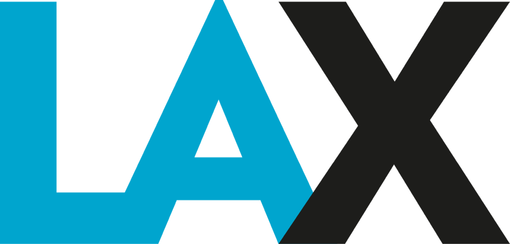

当日深度分时段行程与图文百科
抵达洛杉矶 (LAX) ➔ 海关通关 ➔ 内陆转机至盐湖城

🛬 入境通关流程：早上 10:00 班机降落洛杉矶国际机场 (LAX)。全家人一同通过海关边检（出示护照与入境问答），随后前往行李转盘提取全部托运行李。
🔄 行李中转托运：过海关申报通道后，在出口处的 Connecting Flights / Baggage Drop 柜台直接将托运行李重新交给航空公司，随后轻装前往国内航站楼候机。转机衔接时间较为宽裕（约 6 小时），可从容用餐休息，无需赶路。
🛫 转机航班：下午 16:31 搭乘美联航/United Airlines UA5307 航班飞往盐湖城 (Salt Lake City)，19:25 抵达。
转机百科与通关贴士 (点击展开)
🌐 为什么首站必须提行李：根据美国海关与边境保护局 (CBP) 规定，所有国际旅客在进入美国的第一站（即便最终目的地是其他城市），均须本人提取托运行李完成清关，再放回中转传送带，操作通常只需 2 分钟。
♿ 无障碍与舒适服务：LAX 国际航站楼全域覆盖无障碍平梯与升降机，洗手间均配有温水和无障碍扶手。
抵达盐湖城国际机场 (SLC) ➔ 顺畅取车 ➔ 驶向市中心
特权政策：订单已免费包含额外驾驶人特权（9 Additional Drivers: Included，免收每日附加费，节省约 $120~$180）。
柜台实操准则：费用免费 ≠ 免登记上路
主驾驶人与第二位同行驾驶人 (Additional Driver) 必须同时在柜台出示中国驾照原件、英文翻译认证件及护照原件，由工作人员正式录入租车合同 (Rental Agreement)。严禁未经登记驾驶，确保两人开车均享有商业保险与信用卡保险的全额赔付保障。
❌ 明确拒绝 CDW/LDW (车损盗抢险)：在柜台明确选择 Decline CDW/LDW。租车全程使用大通蓝宝石信用卡/Chase Sapphire Preferred (CSP) 支付，由 CSP 提供的 Primary 租车主险全额赔付本车车损与盗抢（完全保护合同内登记的第二位同行驾驶人）。
✅ 自费购买 SLI/LIS (补充第三者责任险)：在柜台选择 Accept SLI/LIS。享有最高 100 万美元 ($1,000,000) 第三方人身与财产损失独立理赔额度。此项配置能无缝保护两位驾驶人，并彻底隔离个人汽车保险保单，避免事故导致个人保费上涨或跨国驾照争议。
🚶 室内步行直达：盐湖城新航站楼下机后经室内连廊步行即可直达租车中心 (Rental Car Center)，无需搭乘室外摆渡车。直奔 全国租车/National Car Rental 柜台办妥登记，即可在翡翠通道 (Emerald Aisle) 自主选车出发。
🛣️ 顺畅道路：出机场沿 I-80 East 转 400 South，路面宽阔车流平稳，仅需 15 分钟即可直达市中心酒店，预计 20:30 前后抵达。
城市百科：盐湖城地理与高原气候特点 (点击展开)
🏔️ 地理背景：盐湖城坐落于瓦萨奇山脉 (Wasatch Range) 环抱的高原盆地中，平均海拔约 1300 米（4300英尺），空气极为纯净干燥，日照充沛。
💧 补水防燥贴士：初到高原容易感到咽喉干燥，建议全家在落地第一天随身多饮温水，酒店房间内也可备上润唇膏与润肤乳。
入住盐湖城市中心凯悦嘉轩酒店 ➔ 采购与深度休整
🏨 入住酒店：顺利入住 盐湖城/市中心凯悦嘉轩酒店 (Hyatt Place Salt Lake City / Downtown / The Gateway)。酒店毗邻 The Gateway 露天步行商圈，环境安全安静。
🅿️ 停车指引：酒店配备专属大型地面与地库停车场（$15/晚，支持无限次进出）。
🛒 周边采购与晚餐：由于抵达时间较晚，建议在转机候机或途中先简单解决晚餐；当晚视附近店铺营业时间酌情采购少量水和零食即可，其余物资补给可留到次日白天再前往 Trader Joe's 等超市补齐，尽早洗漱入睡倒时差。
- 高原干燥补水：盐湖城海拔约 1300 米，空气干燥。落地首日全家人建议随身多饮温水，在酒店房间内开启加湿或备好润唇膏/保湿乳。
- 时差休整：长途飞行后当天避免安排任何高强度活动，早点就餐入睡，为身体平稳过渡时差。